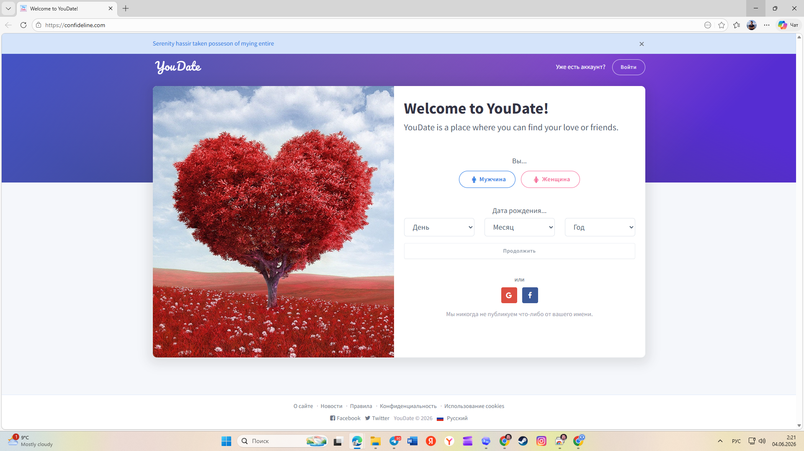
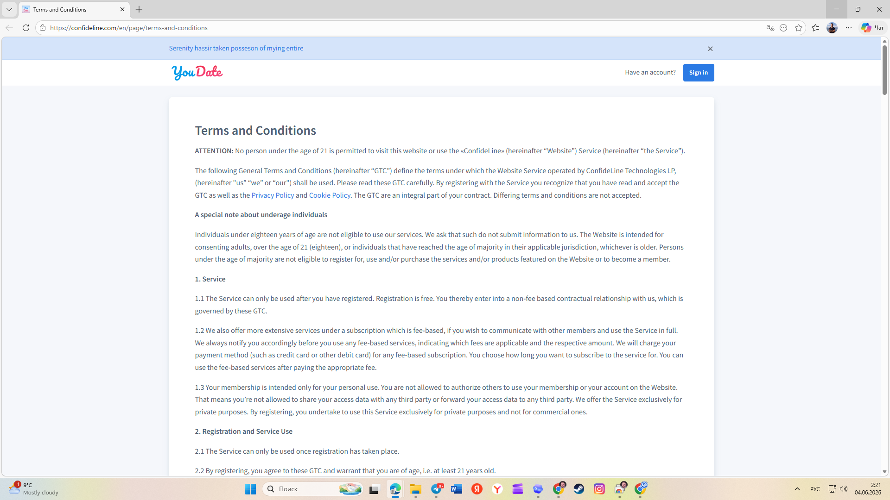

Проверка текущего сайта: backend сейчас, Nebula frontend, что заменить
Эта страница больше не говорит только “текущий сайт не подходит”. Правильная картина: Confideline live сейчас показывает legacy dating public, но у нас уже есть Nebula/Oracle frontend-слой, который нужно связать с backend/admin и legal package.
Три слоя оценки
| Слой | Что есть | Статус PM | Что делать |
|---|---|---|---|
| Live Confideline public | Главная и Terms на текущем live-сайте выглядят как legacy/dating слой. | не подходит для Nebula трафика | Не вести эзотерический трафик на текущую публичную часть. |
| Confideline backend/admin | Текущий backend/admin используется как база: users, messages, orders, support, pages, email templates, roles, bans и др. | база платформы | Доводить универсальный paid P2P service flow и admin visibility. |
| Nebula/Oracle frontend | Есть локальная и публичная frontend-база: landing, auth, psychic pages, legal/support pages, chat/LK proposals. | нужно связать с backend | Для каждой страницы сделать screen contract: source → target page → backend/admin связь → подтверждение проверки. |
Визуальное сравнение
{kind=link}

Сейчас на live: текущая главная Confideline не является Nebula landing и не должна принимать эзотерический трафик.
{kind=link}
{kind=link}

Сейчас Terms: live Terms нужно рассматривать как legacy/legal источник, а не финальный Nebula legal экран.
Что уже найдено во frontend-слое Nebula/Oracle
Nebula pages public sitemap. Это внешний каталог страниц, который нужно использовать как витрину frontend-слоя.
H:NebulaGPT_unzipped: home, auth, legal, refund, payment terms, chat, LK/dashboard proposals.
В локальной верстке есть terms-conditions-new.html, payment-terms-new.html, refund-policy-new.html, privacy-policy-new.html, live-chat-rules-new.html.
Есть auth slice contract и LK/chat proposal страницы. Часть auth source-ready, часть source-blocked до полноценного Figma proof.
Есть Figma export packages и manifest/implementation queue. Для каждой экранной задачи нужен screen contract, а не “похоже на макет”.
Для legal/help страниц зафиксирован shared article shell: header, large title block, content container, нормальная читаемость.
Решение PM
Что передавать Игорю
| Страница/функция | Источник | Передача Игорю |
|---|---|---|
| Главная Nebula | public sitemap, H:NebulaGPT_unzippedhome.html, Figma export package | Натянуть как публичный frontend вместо dating главной, связать CTA с регистрацией/checkout. |
| Terms / Privacy / Refund / Payment Terms | terms-conditions-new.html, privacy-policy-new.html, refund-policy-new.html, payment-terms-new.html, legal package | Заменить legacy legal pages, сохранить переменные/публичные routes, проверить footer links. |
| Chat / LK | psychic-chat-new.html, lk-psychics-dashboard-proposal.html, admin chat/backend | Сделать связку frontend-состояний с backend messages/session/order/support. |
| Auth | Auth slice contract: source-ready login/forgot, source-blocked signup refs | Не принимать 1:1 готовность signup без full-screen proof, но использовать текущие canonical pages как основу. |
Следующая работа
Создать отдельный дочерний ресурс “Реестр страниц и экранов Nebula”: каждая строка = live/current page → Nebula frontend page → backend/admin dependency → legal/content source → подтверждение проверки → статус передачи Игорю.